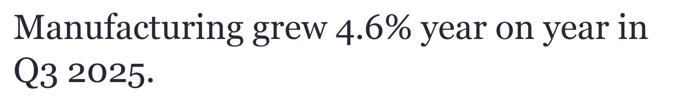
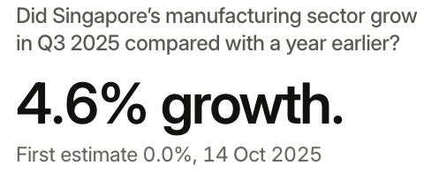

<section class="slide pitch" id="s4" aria-labelledby="h4">
  <h2 id="h4">Every tracked sentence links to its source.</h2>
  <div class="scene trace-scene win arrival">
    <div class="chrome">
      <span class="traffic" aria-hidden="true"><i></i><i></i><i></i></span>
      <span class="chrome-title">Members’ briefing</span>
    </div>
    <div class="trace-body">
      <figure class="trace-slide">
        <figcaption>PowerPoint · Slide 4</figcaption>
        
      </figure>
      <svg class="icon trace-arrow" aria-hidden="true"><use href="#i-arrow"/></svg>
      <figure class="trace-figure">
        <figcaption><a href="https&#58;//revisionpedia.geo.hashmeta.tech/revisions/sg-gdp-manufacturing-yoy-2025-q3/" target="_blank" rel="noopener">Revisionpedia figure history <svg class="icon" aria-hidden="true"><use href="#i-arrow"/></svg></a></figcaption>
        
      </figure>
    </div>
    <a class="trace-release" href="https&#58;//www.singstat.gov.sg/files/678ec3aa-30e5-4a67-8de3-1349182b4d15.pdf" target="_blank" rel="noopener">
      <svg class="icon" aria-hidden="true"><use href="#i-file"/></svg>
      <strong>MTI · Advance GDP estimates</strong><time datetime="2026-04-14">14 Apr 2026</time>
      <svg class="icon" aria-hidden="true"><use href="#i-arrow"/></svg>
    </a>
  </div>
  <aside class="notes">Here’s where the correction comes from. The sentence points to the figure history and the April release where 4.6 percent first appeared.</aside>
</section>
